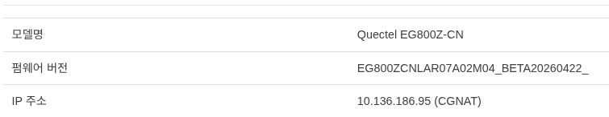
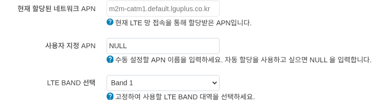
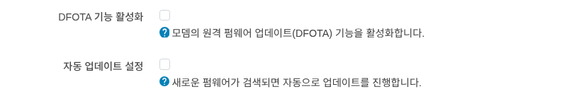
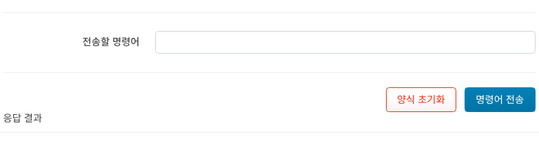

모뎀
모뎀 정보
기본 정보

신호 세기 : 신호 세기를 안테나와 %와 함께 표시 됩니다.
통신사 : 연결된 통신사 이름을 표시 합니다.
SIM 상태 : SIM 카드의 상태를 표시 합니다.
USIM의 그림을 클릭하면 SIM 카드에 대한 정보를 표시합니다.

연결 통계 : 연결된 네트워크의 통계 정보를 표시 합니다.
통신 기술 : 사용 중인 통신 기술을 표시 합니다.
APN : 사용 중인 APN을 표시 합니다.
모뎀 식별 정보


모델명 : 사용중인 모뎀의 모델명을 표시 합니다.
펌웨어 버전 : 사용중인 모뎀의 펌웨어 버전을 표시 합니다.
IP 주소 : IP를 표시 합니다.
중요
모뎀은 일반적으로 CGNAT 구간의 IP를 할당받습니다.
신호 품질 상세

신호 품질에 대한 상세 정보를 표시 합니다.
설정


현재 할당된 네트워크 APN : 현재 LTE 망 접속을 통해 할당받은 APN 정보를 표시 합니다.
사용자 지정 APN : 사용자가 직접 APN을 입력하여 연결할 수 있습니다. (NULL 입력시 망에서 부여받습니다.)
LTE BAND 선택 : 디바이스가 사용가능한 BAND를 선택할 수 있습니다.
중요
통신사에 따라 LTE BAND 선택이 제한될 수 있습니다.
DFota(Delta Firmware Over-The-Air)
모뎀(Quectel)의 FOTA 펌웨어 업데이트 기능을 설정합니다.


DFOTA 기능 활성화 : DFOTA 기능을 활성화/비활성화 할 수 있습니다.
자동 업데이트 설정 : 새로운 펌웨어가 있는 경우 자동으로 업데이트를 진행합니다.
AT 명령어


AT 명령어 입력 : UI에서 AT 명령어를 입력하여, 모뎀과 통신할 수 있습니다.
명령어 전송 실행시 하단에 응답 결과 에 결과가 표시 됩니다.
모뎀 리셋

Quectel 모뎀을 리셋합니다.
중요
라우터 디바이스는 재시작 하지 않습니다.